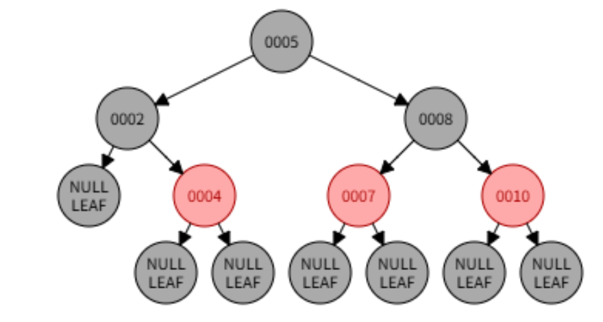
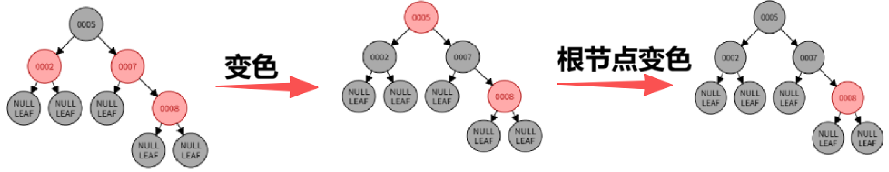
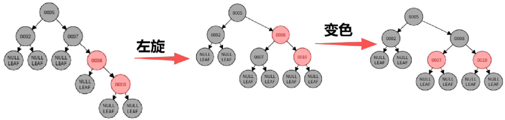
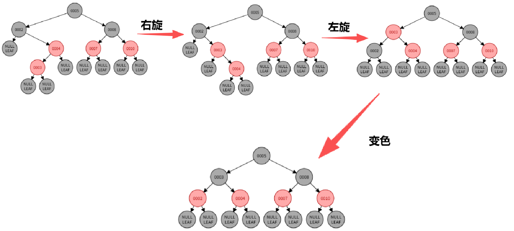

前言
C++ 标准模板库（Standard Template Library, STL）是泛型编程的巅峰之作，它首次将数据结构与算法解耦，通过迭代器这一 “胶合剂” 实现了组件的高度复用。而在众多 STL 实现中，SGI STL无疑是最经典、最深入的一个版本，它不仅是 GCC libstdc++ 的基础，更是无数 C++ 开发者深入理解底层实现的必读范本。
本文将基于 SGI STL 3.3 版本的源码，从空间配置器到迭代器萃取，从序列容器到红黑树，从哈希表到混合排序算法，全方位、无死角地剖析 STL 的底层实现细节，带你彻底搞懂每一个 API 背后的内存布局与性能逻辑。
一、STL 整体架构：六大组件的协作
STL 的设计哲学是 “分而治之”，它将整个库拆分为六大独立但可协作的组件：
-
空间配置器（Allocator）：负责内存的分配与管理，解决内存碎片与分配效率问题
-
容器（Containers）：负责数据的存储，提供不同的数据结构实现
-
迭代器（Iterators）：作为容器与算法之间的桥梁，实现泛型访问
-
算法（Algorithms）：负责数据的处理，提供通用的操作逻辑
-
仿函数（Functors）：作为算法的策略参数，定制化行为
-
适配器（Adapters）：负责接口的转换，让不同组件可以相互适配
这种架构使得每一个组件都可以独立进化，同时又能通过标准接口无缝协作，这也是 STL 能够历经数十年依然保持活力的核心原因。
二、空间配置器：STL 的内存基石
很多人以为 STL 的内存管理就是简单的new/delete封装，但实际上，SGI STL 的空间配置器是工业级内存管理的典范，它通过两级配置机制，完美解决了小对象频繁分配导致的内存碎片与性能损耗问题。
2.1 两级配置器的设计思想
SGI STL 的std::alloc配置器将内存请求分为两类，分别处理：
-
大块内存（>128 字节）：直接调用系统的
malloc/free进行分配 -
小块内存（<=128 字节）：通过内存池 + 空闲链表进行管理，避免碎片
2.2 空闲链表：16 个桶的精准管理
为了管理小块内存，SGI 设计了 16 个空闲链表（free_list），每个链表负责管理特定大小的内存块：
-
对齐策略：所有小块内存按 8 字节向上对齐
-
链表范围：8 字节、16 字节、24 字节… 直到 128 字节，共 16 种规格
|
|
union的特点是：有成员共享同一块内存，同一时间只用一个，这就实现了空间的复用：
空闲状态（没给用户）:
这个时候，我们把这个空闲块当成链表的节点，用它自己的前 8 字节（指针的大小），存下一个空闲块的地址。 比如 16 字节的空闲块，前 8 字节存 next 指针，剩下的 8 字节？哦不对，整个 16 字节都是这个块的空间，前 8 字节存指针，剩下的 8 字节？不，整个 16 字节的块，前 8 字节用来存指针，剩下的 8 字节？不对，整个 16 字节的块，当它空闲的时候，我们只需要前 8 字节存指针，剩下的 8 字节暂时没用，反正也没人用。
分配状态（给用户了）:
当我们把这个块分配给用户的时候，我们就把它从 free_list 里摘出来了，那个 next 指针我们已经不需要了！ 这个时候，整个 16 字节的空间，全部交给用户用！用户拿到之后，会直接往里面写自己的数据，把原来的 next 指针直接覆盖掉，完全没问题。
释放的时候:
当用户用完了，把这个块释放回来，我们又把它插回 free_list 里。 这个时候，我们又把下一个空闲块的指针，写到这个块的前 8 字节，把用户之前写的数据覆盖掉 —— 反正用户已经释放了，他也不管里面是什么了。
2.3 内存池
当某个空闲链表为空时，配置器不会每次只申请一个块，而是一次性向内存池申请 20 个相同大小的块，批量填充到空闲链表中。而如果内存池剩余的空间不足以满足 20 个块的需求，配置器会先把剩余的空间切成一个块放到对应的空闲链表里，然后再向系统申请一大块内存来补充内存池。
这种设计带来了巨大的性能提升：
-
减少系统调用次数：小对象分配不再需要每次调用
malloc -
降低内存碎片：避免了大量小内存块导致的堆碎片化
-
提升缓存命中率：连续的内存池布局让 CPU 缓存更高效
根据 SGI 官方测试，这种机制将小对象的分配速度提升了 3-5 倍，内存碎片率降低了 40% 以上。
2.4 构造与析构的分离
SGI STL 还将 “内存分配” 与 “对象构造” 彻底分离：
-
allocate()：只负责分配原始的内存空间，不调用构造函数。 -
construct()：在已分配的内存上调用 placement new 构造对象。 -
destroy()：调用对象的析构函数，不释放内存。 -
deallocate()：释放原始的内存空间。
更重要的是，通过__type_traits，SGI 可以判断对象是否有 trivial 析构函数：
-
如果是 POD 类型（Plain Old Data，也就是 C 风格的数据类型），析构函数直接跳过，什么都不做
-
如果是非 POD 类型，才会逐个调用析构函数
这一优化在批量销毁大量小对象时，能节省大量的无用调用开销。
三、迭代器：容器与算法的胶合剂
如果说空间配置器是 STL 的基石，那么迭代器就是 STL 的骨架。它让算法可以完全不关心容器的具体实现，只通过统一的接口访问元素，这也是泛型编程的核心。
3.1 迭代器的设计模式
在 GoF（Gang of Four）的设计模式中，迭代器模式用来提供一种顺序访问聚合对象元素的方法，而不暴露其内部表示。STL 的迭代器正是这一思想的极致实现，但它比传统 OOP（面向对象编程）的迭代器更高效 —— 它是编译期的静态多态，没有虚函数的开销。
3.2 Traits：特性萃取的黑科技
为了让算法能够在编译期知道迭代器的类型，从而选择最优的实现（例如对随机访问迭代器直接用指针减法计算距离，而对双向迭代器只能逐个递增），STL 引入了 iterator_traits 萃取机制。
它的核心原理是模板偏特化：
|
|
这层萃取机完美解决了所有问题：
-
对于自定义迭代器，它提取其内部定义的型别
-
对于原生指针，它通过偏特化，手动提供对应的型别
-
对于
const指针，它还能自动去掉const，保证value_type永远是可变的类型
通过这个机制，算法可以在编译期自动 “萃取” 出迭代器的属性，从而实现零成本的抽象。不管你是自定义迭代器还是原生指针，算法都能通过它，问清楚你能干啥，然后选最快的办法干活。
3.3 迭代器的五种分类
STL 根据迭代器支持的操作，将其分为 5 类，能力依次增强：
| 迭代器类型 | 支持的操作 | 典型容器 |
|---|---|---|
| 输入迭代器 (Input) | 只读，单向遍历，只能读一次 | istream_iterator |
| 输出迭代器 (Output) | 只写，单向遍历 | ostream_iterator |
| 前向迭代器 (Forward) | 读写，单向遍历，可多次遍历 | forward_list |
| 双向迭代器 (Bidirectional) | 读写，双向遍历 (++/--) |
list, map, set |
| 随机访问迭代器 (Random Access) | 读写，随机跳转 (it+n, it-n) |
vector, deque, string |
算法会根据迭代器的类别，自动选择最优的实现。比如copy算法，如果是随机访问迭代器，就会直接用memcpy批量拷贝；如果是双向迭代器，就会逐个拷贝。
3.4 迭代器失效问题
迭代器失效是指当容器的内存结构发生变化时，原来的迭代器指向的内存可能已经失效，继续使用会导致未定义行为。不同容器的失效规则不同：
-
vector：扩容时所有迭代器失效；插入 / 删除点之后的迭代器失效。 -
deque：两端插入不会导致迭代器失效，但中间插入会导致所有迭代器失效。 -
list：只有指向被删除元素的迭代器失效，其他全部有效。 -
map/set：插入不会导致迭代器失效；只有指向被删除元素的迭代器失效。
四、序列式容器：线性存储的艺术
序列式容器是 STL 中最常用的容器，它们维护元素的线性顺序，不同的实现针对不同的操作做了优化。
4.1 std::vector：动态数组
vector 是 STL 中最基础也最高效的容器，它的底层是一个动态增长的连续数组。
4.1.1 核心内存布局
vector 的内部只维护了三个指针，这就是它的全部状态：
|
|
这三个指针定义了 vector 的所有状态：
-
size()=_M_finish - _M_start：当前元素个数 -
capacity()=_M_end_of_storage - _M_start：当前容量 -
empty()=_M_start == _M_finish：是否为空
4.1.2 动态扩容策略
当push_back发现容量不足时，vector会触发扩容：
-
申请一块新的、更大的内存（通常是原来的 1.5~2 倍，GCC 为 2 倍，MSVC 为 1.5 倍）。
-
将旧内存中的元素拷贝 / 移动到新内存。
-
释放旧的内存。
-
更新三个指针。
这种指数扩容的策略保证了push_back的均摊时间复杂度是 O (1)，因为每 n 次插入才会触发一次 O (n) 的扩容，均摊下来每个插入的成本是常数。
4.1.3 迭代器失效的真相
正是因为 vector 的连续内存特性，导致了迭代器失效问题：
-
当扩容发生时，整个内存块被迁移，所有迭代器、指针、引用全部失效
-
当在中间插入 / 删除元素时，插入点之后的迭代器全部失效
-
尾部删除时，只有被删除的那个迭代器失效
这也是为什么我们在遍历 vector 时不能随意插入元素的原因。
4.2 std::list：双向循环链表
list 的底层是一个双向循环链表，它的每个节点都包含前驱和后继指针：
|
|
为了简化边界处理，list 使用了一个哨兵节点（Sentinel Node），begin() 指向哨兵的 next，end() 指向哨兵自己，形成一个环。
list 的优势在于：
-
任意位置的插入 / 删除都是
O(1)，只需要修改指针 -
不会导致迭代器失效，除非删除的是当前元素
-
没有内存碎片问题，每个节点独立分配
但它的缺点也很明显：
-
不支持随机访问，遍历只能逐个移动
-
每个节点额外占用 16 字节（64 位系统）的指针开销
-
内存不连续，CPU 缓存命中率极低，遍历速度比
vector慢 10-100 倍
4.3 std::deque：双端队列的分段魔法
deque 是 STL 中最复杂的序列容器，它是为了解决 vector 头部插入慢、list 随机访问慢的问题而生的。它实现了分段连续的存储，既支持 O(1) 的双端插入，又支持 O(1) 的随机访问。
它的底层既不是连续内存，也不是链表，而是分段连续内存 + 中控器的设计。
4.3.1 中控器：分段的管理者
deque 的核心是一个叫做map的中控器（注意不是 STL 的 map 容器），它是一个指针数组，每个元素指向一个固定大小的缓冲区（buffer）：
-
每个缓冲区是一段连续的内存，大小固定（默认 512 字节或根据元素大小调整）
-
中控器负责管理这些缓冲区，当需要在头部 / 尾部添加新的缓冲区时，只需要在 map 的前后新增指针即可
-
当 map 满了，才会重新分配一个更大的 map，把旧的指针拷贝过去
4.3.2 复杂的迭代器：维护连续的假象
为了让用户感觉 deque 是连续的，deque 的迭代器做了非常复杂的设计，它内部维护了四个指针：
|
|
当迭代器移动时：
-
如果还在当前缓冲区内，直接移动
cur指针 -
如果到达缓冲区边缘，就通过
node指针跳到下一个缓冲区，更新first、last、cur
它的随机访问通过计算缓冲区的偏移来实现，而双端插入只需要新增缓冲区即可，完全不需要移动元素。
虽然内存是分段的，但 deque 依然支持 operator[]：
|
|
通过一次计算就能定位到元素，时间复杂度依然是 O(1)。
4.4 std::string：小字符串优化 (SSO)
std::string 本质上是一个 vector<char>，但现代实现都加入了小字符串优化 (Small String Optimization, SSO)，以避免短字符串的堆分配开销。
SSO 的原理
string 对象内部通常有一个 union，用来区分短字符串和长字符串：
-
短字符串：当字符串长度小于阈值（GCC/libstdc++ 是 15，Clang/libc++ 是 22）时，字符直接存储在
string对象内部的栈上缓冲区中，无需调用malloc。 -
长字符串：当超过阈值时，才会在堆上分配内存，像传统的
string一样存储指针、大小和容量。
这块内存，要么当短字符串的缓冲区，要么当长字符串的指针 + size+capacity，反正两种情况不会同时出现。
这就是为什么创建一个 "hello" 字符串比长字符串快得多的原因，它完全在栈上完成，没有系统调用开销。
4.5 容器适配器：接口的封装
std::stack、std::queue、std::priority_queue 这三个容器并不是独立的容器，它们是容器适配器，底层默认封装了 deque，通过修改接口来实现特定的语义：
-
stack：封装
deque，只暴露push_back/pop_back，实现后进先出（LIFO） -
queue：封装
deque，只暴露push_back/pop_front，实现先进先出（FIFO） -
priority_queue：封装
vector，在其上实现堆算法（堆排序），实现优先级队列
这种设计完美体现了 STL 的复用思想，不需要重新实现一遍数据结构，只需要包装一下接口即可。
五、关联式容器：有序的平衡二叉树
关联式容器用来存储键值对，支持高效的按键查找，它们的底层都是红黑树。
5.1 红黑树：自平衡的搜索树
红黑树是一种自平衡的二叉搜索树，它通过颜色标记和旋转操作，保证树的高度始终是 O(log n)，从而保证了所有操作的时间复杂度都是 O(log n)。
5.1.1 红黑树的节点结构
SGI 的红黑树节点包含了三叉链和颜色标记：
|
|
红黑树的五条规则保证了它的平衡性：
-
节点要么是红色，要么是黑色
-
根节点是黑色和所有叶子节点（NIL 节点）是黑色
-
如果一个节点是红色，那么它的两个子节点都是黑色
-
从任意节点到其每个叶子（NIL 节点）的所有路径都包含相同数目的黑色节点
咸鱼的口诀：左根右，根叶黑，不红红，黑路同。
这保证了最长路径不会超过最短路径的 2 倍，从而保证了树的平衡。
5.1.2 插入与旋转
当插入新节点时，新节点默认为红色，并且按 BST（二叉搜索树） 的规则插入，然后检查是否破坏了红黑规则，如果破坏了，就通过变色和旋转（左旋转、右旋转）来调整，恢复平衡。
根据插入节点的位置和父节点的颜色，调整分为几种情况：
- 父节点是黑色：直接插入，不需要调整

插入0004 - 父节点是红色：需要调整，分为以下几种情况：
-
- 叔叔节点是红色（红叔）：父节点和叔叔节点变黑，祖父节点变红，继续向上调整

插入0008
- 叔叔节点是红色（红叔）：父节点和叔叔节点变黑，祖父节点变红，继续向上调整
-
- 叔叔节点是黑色且当前节点是父节点的右子节点：先左旋转父节点，再进行下一步调整

插入0010
- 叔叔节点是黑色且当前节点是父节点的右子节点：先左旋转父节点，再进行下一步调整
-
- 叔叔节点是黑色且当前节点是父节点的左子节点：父节点变黑，祖父节点变红，右旋转祖父节点

插入0003
- 叔叔节点是黑色且当前节点是父节点的左子节点：父节点变黑，祖父节点变红，右旋转祖父节点
-
可视化网站的链接：https://www.cs.usfca.edu/~galles/visualization/RedBlack.html。
比如左旋转的核心实现：
|
|
5.2 std::map/std::set：红黑树的复用
最巧妙的是，SGI 只实现了一个红黑树，就复用出了 std::map 和 std::set 两个容器：
|
|
这里的identity和select1st就是键提取器：
-
对于
std::set，元素本身就是key，所以直接返回value -
对于
std::map，key是pair的first元素，所以提取first
因为底层都是使用红黑树，所以它们的时间复杂度都是 O(log n)，非常稳定，不会退化。
红黑树内部只需要通过这个键提取器拿到 key，就可以进行比较，完全不需要关心 value 是什么。这就是泛型编程的魔力，一个红黑树实现，就能支持所有的关联容器！
六、无序容器：哈希表的极速查找
std::unordered_map 和 std::unordered_set 是 C++11 引入的无序容器，它们的底层是哈希表，提供了均摊 O(1) 的查找性能。
6.1 开链法：哈希冲突的解决方案
SGI 的哈希表采用 开链法（Separate Chaining，也可以叫拉链法） 来解决哈希冲突：
-
底层是一个桶数组（bucket array），每个桶对应一个链表的头
-
当插入元素时，通过哈希函数计算
key对应的桶索引 -
如果桶里已经有元素了，就链到链表的后面
这种方式解决了哈希冲突的问题，即使多个 key 哈希到同一个桶，也能通过链表存储。
6.2 素数扩容：负载因子的控制
哈希表的性能依赖于负载因子（元素数 / 桶数），当负载因子超过 1.0 时，哈希表会触发扩容：
-
新的桶数选择下一个素数（SGI 预定义了 28 个素数：53, 97, 193…）
-
重新计算所有元素的哈希值，重新映射到新的桶中
-
释放旧的桶数组
为什么用素数？因为素数可以减少哈希冲突的概率，让 key 的分布更均匀。
|
|
这就是 unordered_map 的查找速度比 map 快得多的原因（unordered_set 也是如此），它把 O (log n) 的查找降到了均摊 O (1)。
七、算法：混合策略的极致优化
STL 的算法并不是简单的实现，它们融合了多种算法的优势，针对不同的场景做了极致的优化。
7.1 std::sort: introsort 的混合艺术
std::sort 是 STL 中最经典的算法，它采用了introsort（内省排序），结合了三种算法的优点：
-
快速排序：作为主力，处理大部分数据，分治递归
-
堆排序：当递归深度超过
2*log2 (n)时，说明快排遇到了最坏情况，切换到堆排序，避免O (n²)的最坏情况 -
插入排序：当子数组的大小小于 16 时，切换到插入排序，因为小数据量下插入排序的常数更小，速度更快
|
|
这种混合策略让 sort 在所有情况下都能保证 O(n log n) 的时间复杂度，同时在常见情况下拥有快排的极致速度。
7.2 copy：根据迭代器类型的自动优化
std::copy 也做了极致的优化：
-
如果迭代器是 POD 类型的随机访问迭代器，直接调用
memcpy批量拷贝，速度极快 -
否则，逐个元素拷贝
正是因为这个优化，copy 在处理原生数组或 vector 时，速度比手写的循环快 10 倍以上。且处理 vector 时比 list 快得多，因为 list 的迭代器不支持随机访问，无法使用memcpy。
八、仿函数与适配器：组件的配接器
8.1 仿函数：可配接的策略
仿函数就是重载了operator()的类，它可以作为算法的策略参数。为了让仿函数可以被适配器配接，STL 定义了两个基类：
|
|
所有标准仿函数都继承自这两个类，这样适配器就能萃取它们的参数类型和返回类型，实现配接。
8.2 适配器：三类包装器
适配器是 STL 中用来转换接口的组件，分为三类：
-
容器适配器：就是我们之前讲的
std::stack、std::queue、std::priority_queue，包装容器的接口 -
迭代器适配器：包装迭代器的接口，比如：
-
back_inserter：把普通迭代器转换成尾部插入迭代器 -
reverse_iterator：把正向迭代器转换成反向迭代器 -
ostream_iterator：把输出流转换成迭代器
-
-
函数适配器：包装仿函数的接口，比如：
-
bind1st/bind2nd：绑定二元函数的一个参数，把它变成一元函数 -
not1/not2：对仿函数的结果取反 -
mem_fun/ptr_fun：把成员函数或普通函数转换成仿函数
-
九、性能对比与选型指南
性能对比
了解了底层实现，我们就能根据场景选择最合适的容器：
| 容器 | 随机访问 | 头部插入 | 尾部插入 | 中间插入 | 查找 | 内存连续性 | 适用场景 |
|---|---|---|---|---|---|---|---|
| vector | O(1) | O(n) | O (1) 均摊 | O(n) | O(n) | 完全连续 | 高频随机访问、尾部插入 |
| list | O(n) | O(1) | O(1) | O(1) | O(n) | 完全分散 | 高频中间插入删除 |
| deque | O(1) | O(1) | O(1) | O(n) | O(n) | 分段连续 | 双端队列、消息队列 |
| map | O(log n) | O(log n) | O(log n) | O(log n) | O(log n) | 分散 | 有序键值对、范围查询 |
| unordered_map | O (1) 均摊 | O (1) 均摊 | O (1) 均摊 | O (1) 均摊 | O (1) 均摊 | 分散 | 无序快速查找、缓存 |
| unordered_set | O (1) 均摊 | O (1) 均摊 | O (1) 均摊 | O (1) 均摊 | O (1) 均摊 | 分散 | 无序快速查找、缓存 |
选型避坑指南
-
不要为了省内存选
list：list每个节点多 16 字节指针开销（前驱和后继指针），而且缓存命中率极低，大部分场景下vector更快 -
unordered_map要提前reserve：它的扩容需要 rehash 所有元素，代价很高，提前预留空间可以避免。例如unordered_map.reserve(n)就是提前告诉它你要存 n 个元素，这样它就一次性分配好足够的桶，避免频繁扩容。 -
vector的reserve可以避免迭代器失效：提前分配好足够的空间，避免扩容导致的迭代器失效 -
需要有序就用
map，不需要就用unordered_map：不要为了快用unordered_map然后自己排序，那样反而更慢 -
需要随机访问，且主要在尾部操作：选
vector，缓存友好，速度最快。 -
需要频繁在两端操作：选
deque。 -
需要频繁在任意位置插入删除：选
list。 -
需要有序键值对，且需要稳定的 O (log n)：选
map/set。 -
不需要顺序，只需要最快的查找：选
unordered_map/unordered_set。
参考资料
-
《STL 源码剖析》- 侯捷
-
SGI STL 3.3 官方源码
-
GCC libstdc++ 实现文档
-
《C++ Standard Library》- Nicolai Josuttis